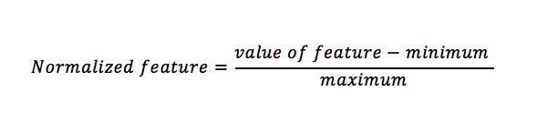
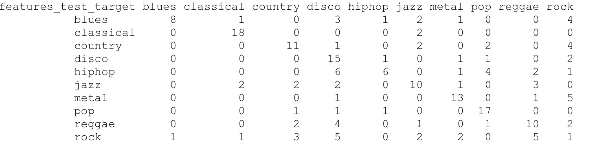
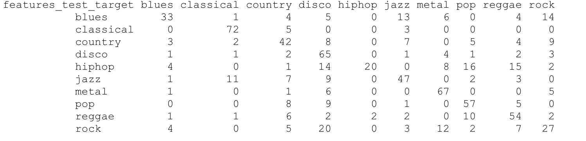
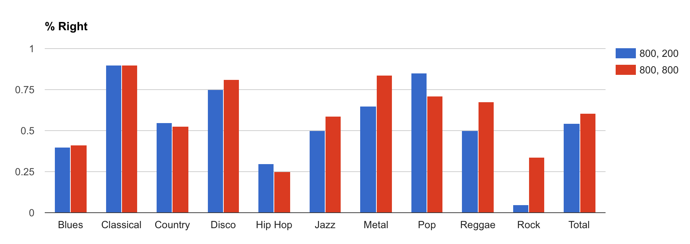
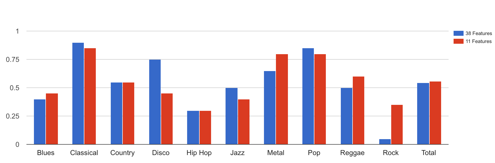

After the boom of music streaming business and the ability for anyone to upload their own songs to YouTube and SoundCloud, the music library for providers such as iTunes, Spotify and Pandora has increasingly expanded in a faster and larger scale. As part of the service, all songs provided to the users contain many tags and genre is one of them. It is a common way for music service to personalize and make the music experiences better for each user.
Therefore, genre classification has been a well-studied topic over the past decade. Our goal is to design a program that can take an audio file as input and return its best estimation for the genre of the inputted audio file. We think that by further exploring the low-level mechanisms that goes into genre classification will help us understand which features of audio files are best for classifying Western music in general.
We are trying to develop and compare the accuracy of our KNN classifier based on different sets of features. In detail, we are trying to find the feature vector that comprises of the low-level features that will generate the most accurate results of genre classification.
Methodology
Genre classification is centered around machine learning. Therefore, we choose, for this project, the k-nearest neighbors algorithm (KNN) for doing the job. In addition, it is very crucial to determine the genres that we are classifying the music into and the dataset that we are training our algorithm on. We chose GTZAN Genre Collection Dataset. There are 1,000 songs of 30 seconds each in .wav format, evenly distributed into 10 genres. The 10 different genres are:
Blues
Classical
Country
Disco
Hip-Hop
Jazz
Metal
Pop
Raggae
Rock
Below are examples of one audio file for each genre: ( .WAV files do not play in Chrome)
Blues:
Classical:
Country:
Disco:
Hip-Hop:
Jazz:
Metal:
Pop:
Reggae:
Rock:
Feature Extraction
Afterwards, we used an existing script online to conduct feature extraction. The script uses Librosa to extract the packages. It takes in audio files and output a .csv file that lists the final values of each feature for each song. Each song has 39 fields, among them ‘Song Name’ and ‘Genre’.
While reviewing the results, we find out that among features, the range of values vary drastically. Therefore, we decided to normalize all data to prevent potential skews while running through the KNN classifier. We modified the pre-existing code to normalize the data before it exports it to a .CSV. Our version of the code that extracts only the features we used and normalizes the data along with an example output can be found here (.Zip). The equation for normalization is shown below:

Classification
The k-nearest neighbors algorithm (KNN) takes an input of two .csv files:
Training .csv: a matrix of the individual songs versus the values of all extracted features.
Testing .csv: a matrix of the individual songs versus the labelled genres.
Each song is passed into the matrix as a feature vector of 37 fields. The 37 features maps into three high-level features: rhythm, timbre and harmony.
Each file has all 1000 songs in them. The songs are not randomized and grouped in terms of genres.
We determined that we are going to split the datasets into two: 800 songs for training and 200 songs for testing. The KNN algorithm divides the files into corresponding portions for its training and testing. In other words, each genre has 80 songs used for training the model and 20 songs used for testing the model.
Evaluation
The output of KNN matrix is used for evaluation of the algorithm. The vector of genre classification results, which in our case 200 of them, is made into a confusion matrix. The matrix describes the performance of the classifier in terms of how many songs that are correctly classified and how many are not. For the confusion matrix, we also calculated the hit rates overall genre classification and that of each genre.
Results
We ran the KNN classifier based on our dataset setup and we had a 54.50% hit rate. For individual genres, the hit rate ranges from as low as 5% for Rock and as high as 90% for Classical.
For individual genres, the classifier did well on genres of classical and pop;
The classifier did okay in country, disco and metal;
The classifier did poorly in blues, hiphop, jazz, reggae and rock.
Blues songs are most often classified incorrectly into disco and rock.
Hiphop songs are most often classified incorrectly into disco and pop.
Jazz songs are most often classified incorrectly into country, disco and reggae.
Reggae songs are most often classified incorrectly into disco.
Rock songs are most often classified incorrectly into country, disco and reggae.
In addition, disco, jazz, reggae and rock are the most popular genres that the songs were classified incorrectly into.
Confusion Matrix for 800 train, 200 test Vertical Axis is Actual Genre, Horizontial Axis is Predicted Genre

Subsequent Testing
First of all, we changed our setup to test for a better result: we train the model on 800 songs and test the data on the 800 songs itself to see if the model gives us a better result. The result, as it turns out, is better. However, the results mirrored the hit rates of genres for our original setup. This means that there might be an incorrect setup of our feature vectors.
Confusion Matrix for 800 train, 800 test Vertical Axis is Actual Genre, Horizontial Axis is Predicted Genre

We had a hypothesis on why the classifier does poorly: we have too many features that potentially caused interference and a dampening effect when KNN is running the classification. Therefore, we decided to run the KNN algorithm again with fewer features.
We did further data analysis on our current dataset. We calculated the mean and standard deviation for each feature of each genre group. From them, we eyeballed to pick the features for our new feature vector with a smaller dimension under the two conditions:
For a feature, the averages are visibly distinct among the genres.
For a feature, the standard deviation should be comparatively small in all genres.
The features should represent all three of our high-level features
In this way, we think that such process would be able to find features that better represent the genres and also differentiable.
After a few runs, we found out that a new feature vector of 11 features give us a marginally better accuracy. The new overall hit rate is 55%.
Graphs:
Graph 1: Compraing running 37-Feature KNN with 800 songs to train, 200 seperate to test vs 800 songs to train, same 800 to test:

Graph 2: Comparing 37 feature KNN with 800 songs to train, 200 seperate to test vs 11 Feature KNN with 800 songs to train, 200 seperate to test:

Conclusion
Based on the subsequent testing, we determined that our hypothesis is proved to be wrong. However, we think that there are the following things that potentially caused the results and we could improve upon given more time:
“Fewer Features”. Given more time, we might be able to use more sophisticated data analysis instead of mere eyeballing. Using the results from the analysis, we will be able to pick features that best correlate with classification of the genres that we are testing on.
“More Features”. Further, we have a theory that the results might not be enough in the sense of mapping into high-level features. Based on librosa that our feature extraction script is using, the 37 features are heavily tilted towards the timbre feature group. Therefore, by using other, more comprehensive packages, such as Essentia (another music and audio processing package in Python), we will be able to extract more features for the rhythm and harmony feature group, and potentially other high-level feature group such as pitch and complexity. In that way, by evenly distributing the weight for each feature group in the feature vector, we could potentially acquire better results.
The capacity of the dataset used for training. We only have 1,000 songs in our dataset, with 800 used for training and 200 used for testing. With a dataset of a bigger size, such as 10,000 songs, we might be able to train the KNN algorithm to do a better job.
The defined genres. The current genres that we are using might not be accurate enough. For example, disco is a genre that is quite antique and not representative enough of the music in the present. Genres such as blues and jazz, metal and rock, could debatably be thought as similar genres or one being a subgenre of the other. A better definition of the genres could help us in getting a more accurate result.
Comparison to humans: We have identified the percentages at which our program and KNN can identify genres at, but in order to truly understand how powerful our solution is, we must perform a study on how accurate humans can identify genres. Will humans be more accurate? If so how long does it take them and is the extra accuracy worth the labor cost associated with it? Performing a study comparing a test data set done on humans, and done on our system would be an ideal step.